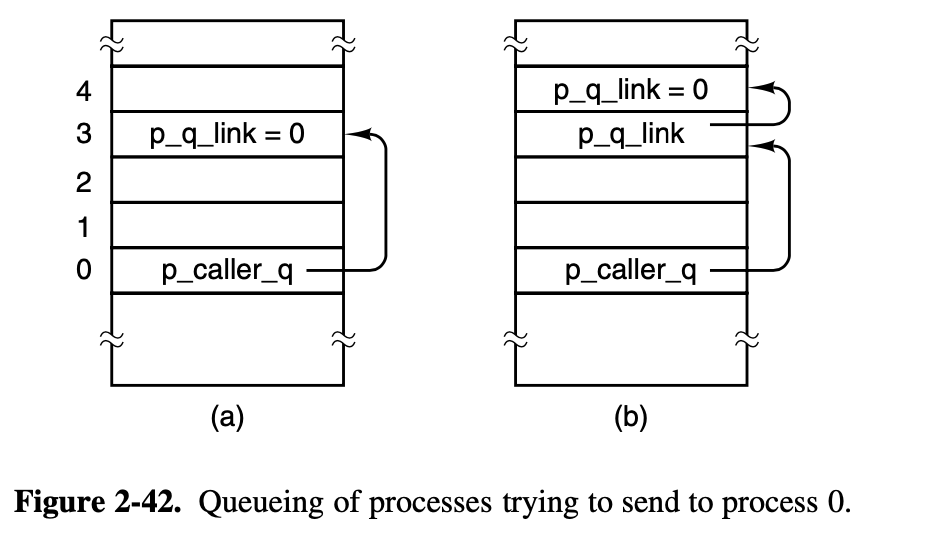

Operating Systems Design and Implementation Notes
6. Interrupt
By Jiawei Wang
In the previous two notes (4. Inside a Hole Clock Tick and 5. Process Scheduler) we focus on the implementation of clock and process scheduler. These components help us understand the OS concretly.
But there are also a lot of things we didn't considered, like Interprocess Communication and how a process do System Call to apply for a service from os that we metioned in Chapter1, or what would happen when there comes an interrupt and so on... These are also in the field of Process.
Since each part of the OS was indivisible. We should admit that it impossible to understand a hole part without the understanding of the other parts.
1. Interrupts

Hardware Interrupt
In 4. Inside a Hole Clock Tick we talked about the Hardware Interrupt:There are 15 different IRQ lines in the 8259 interrupt controller, each line connect with one or more hardware device(s) that genarate electrical signals.
 When user input something at the connected devices like keyboard
When user input something at the connected devices like keyboard (IRQ1), it will cause a Hardware Interrupt through the IRQ line and then the 8259 interrupt controller will expand the coorespond assembly marco hwint_master(i) or hwint_slave(i) and execute it.
It will call the corresponding irq_handler(hook) which be placed into the interrupt table at initialization put_irq_handler(hook) is called for each process(driver) that must respond to an interrupt(sys_irqctl).
PUBLIC void irq_handle(irq)
irq_hook_t *hook;
{
/* Call the interrupt handlers for an interrupt with the given hook list.
* The assembly part of the handler has already masked the IRQ, reenabled the
* controller(s) and enabled interrupts.
*/
/* Call list of handlers for an IRQ. */
while (hook != NULL) {
/* For each handler in the list, mark it active by setting its ID bit,
* call the function, and unmark it if the function returns true.
*/
irq_actids[hook->irq] |= hook->id;
if ((*hook->handler)(hook)) irq_actids[hook->irq] &= ~hook->id;
hook = hook->next;
}
/* The assembly code will now disable interrupts, unmask the IRQ if and only
* if all active ID bits are cleared, and restart a process.
*/
}
For example: In the figure 2-39, interrupt signals arrive on the various IRQ n lines shown at the right. The connection to the CPU’s INT pin tells the processor that an interrupt has occurred. The INTA (interrupt acknowledge) signal from the CPU causes the controller responsible for the interrupt to put data on the system data bus telling the processor which service routine(handler) to execute.
Software Interrupt
There are more cases that a running process wants to cause an interrupt. Actually, in Minix3, all Interprocess Communication were done by software interrupt.
If a process wants to send a message to dst_ptr with message m. it will use this statement:
send(*dst_ptr, &m);
And send function was a asssembly marco which was defined in include/minix/ipc.h line143:
#define send _send
The hole assembly code are in the lib/i386/rts/ipc.s line20:
__send:
push ebp
mov ebp, esp
push ebx
mov eax, SRC_DST(ebp) ! eax = dest-src
mov ebx, MESSAGE(ebp) ! ebx = message pointer
mov ecx, SEND ! _send(dest, ptr)
int SYSVEC ! trap to the kernel
pop ebx
pop ebp
ret
This piece of assembly code _send put the dst and m arguments into register.And then cause a software interrupt int SYSVEC.
_s_call
s_call is the system call counterpart of the interrupt-handling mechanism. Control arrives at s call following a software interrupt, that is, execution of an int <nnn> instruction.
/*===========================================================================*/
/* _s_call */
/*===========================================================================*/
.balign 16
s_call:
p_s_call:
cld /* set direction flag to a known value */
sub $4, %esp /* skip RETADR */
pusha /* save "general" registers */
pushw %ds
pushw %es
pushw %fs
pushw %gs
mov %ss, %si /* ss is kernel data segment */
mov %si, %ds /* load rest of kernel segments */
mov %si, %es /* kernel does not use fs, gs */
incb k_reenter /* increment kernel entry count */
mov %esp, %esi /* assumes P_STACKBASE == 0 */
mov $k_stktop, %esp
xor %ebp, %ebp /* for stacktrace */
/* end of inline save */
/* now set up parameters for sys_call() */
push %edx /* event set or flags bit map */
push %ebx /* pointer to user message */
push %eax /* source / destination */
push %ecx /* call number (ipc primitive to use) */
call sys_call /* sys_call(call_nr, src_dst, m_ptr, bit_map) */
/* caller is now explicitly in proc_ptr */
mov %eax, AXREG(%esi)
/* Fall into code to restart proc/task running. */
- The first part of the
s_callcode resembles an inline expansion of save and saves the additional registers that must be preserved. - Just as in
save, amov esp, k_stktopinstruction then switches to the kernel stack. - The similarity of a software interrupt to a hardware interrupt extends to both disabling all interrupts
- Following this comes a call to
sys_call, which we will discuss in the next section. It causes a message to be delivered, and that this in turn causes the process scheduler to callenqueue(dst_ptr)to set thenext_ptr. - Since the
restartfunction is in the next line ofs_call, aftersys_callreturn, it will pick another process to run.
restart
restart is an assembly language routine in kernel/arch/i386/mpx386.s line436.
It causes a context switch, so the process pointed to by next_ptr will run.
restart is executed again and again as tasks, servers, and user processes are given their opportunities to run and then are suspended, either to wait for input or to give other processes their turns.
/*===========================================================================*/
/* restart */
/*===========================================================================*/
restart:
/* Restart the current process or the next process if it is set. */
cli
call schedcheck
movl proc_ptr, %esp /* will assume P_STACKBASE == 0 */
lldt P_LDT_SEL(%esp) /* enable process' segment descriptors */
cmpl $0, P_CR3(%esp)
jz 0f
mov P_CR3(%esp), %eax
cmpl loadedcr3, %eax
jz 0f
mov %eax, %cr3
mov %eax, loadedcr3
mov proc_ptr, %eax
mov %eax, ptproc
movl $0, dirtypde
0:
lea P_STACKTOP(%esp), %eax /* arrange for next interrupt */
movl %eax, tss+TSS3_S_SP0 /* to save state in process table */
restart1:
decb k_reenter
popw %gs
popw %fs
popw %es
popw %ds
popal
add $4, %esp /* skip return adr */
iret /* continue process */
- When
restartis reached, interrupts are disabled, so thenext_ptr(mostly assign by process schedulerpick_proc()) cannot be changed. - The process table was carefully constructed so it begins with a stack frame, and the instruction on this line
movl proc_ptr, %esppoints the CPU’s stack pointer register at the stack frame. lldt P_LDT_SEL(%esp): this instruction then loads the processor’s local descriptor table register from the stack frame. This prepares the processor to use the memory segments belonging to the next process to be run.
Summary
Up to so far. In the Previous Notes of this Chapter2 Process.
We've seen that restart is reached in several ways:
- By a call from main when the system starts (cold boot) (kernel/main.c).
- By a jump from
hwint_masterorhwint_slaveafter a hardware interrupt. - By falling through from s call after a system call.
 Fig. 2-41 is a simplified summary of how control passes back and forth between processes and the kernel via
Fig. 2-41 is a simplified summary of how control passes back and forth between processes and the kernel via restart.
2. Interprocess Communication
Processes in MINIX 3 communicate by messages, using the rendezvous principle. The high-level code for interprocess communication is found in proc.c
The kernel’s job is to translate either a hardware interrupt or a software interrupt into a message.
- Hardware Interrupt: Ask the interrupt controller to put data on the system data bus and telling the processor which service routine to execute (interrupt handler) (drivers).
- Software Interrupt: The
sys_call(call_nr, src_dst, m_ptr)function ins_callconverts a software interrupt into a message. After all the tests have been passed, one of the functionsmini_send(),mini receive(), ormini notify()is called to do the real work.
/* Now check if the call is known and try to perform the request. The only
* system calls that exist in MINIX are sending and receiving messages.
* - SENDREC: combines SEND and RECEIVE in a single system call
* - SEND: sender blocks until its message has been delivered
* - RECEIVE: receiver blocks until an acceptable message has arrived
* - NOTIFY: asynchronous call; deliver notification or mark pending
* - SENDA: list of asynchronous send requests
*/
switch(call_nr) {
case SENDREC:
/* A flag is set so that notifications cannot interrupt SENDREC. */
caller_ptr->p_misc_flags |= MF_REPLY_PEND;
/* fall through */
case SEND:
result = mini_send(caller_ptr, src_dst_e, m_ptr, 0);
if (call_nr == SEND || result != OK)
break; /* done, or SEND failed */
/* fall through for SENDREC */
case RECEIVE:
if (call_nr == RECEIVE)
caller_ptr->p_misc_flags &= ~MF_REPLY_PEND;
result = mini_receive(caller_ptr, src_dst_e, m_ptr, 0);
break;
case NOTIFY:
result = mini_notify(caller_ptr, src_dst_e);
break;
case SENDNB:
result = mini_send(caller_ptr, src_dst_e, m_ptr, NON_BLOCKING);
break;
case SENDA:
result = mini_senda(caller_ptr, (asynmsg_t *)m_ptr, (size_t)src_dst_e);
break;
default:
result = EBADCALL; /* illegal system call */
}
The functions mini_send(), mini_receive(), and mini_notify() are the heart of the normal message passing mechanism of MINIX 3 and deserve careful study.
NOTE: I use Minix 3.1 version of these three functions, you can find them through the link: Bootlin Minix V3.1.0
mini_send()
When a process does a send(). The lowest layer of the kernel checks to see if the destination is waiting for a message from the sender(or from ANY sender).If so, the message is copied from the blocked sender to the receiver, and both are marked as runnable. If the destination is not waiting for a message from the sender, the sender is marked as blocked and put onto a queue of processes waiting to send to the receiver.
PRIVATE int mini_send(caller_ptr, dst, m_ptr, flags)
register struct proc *caller_ptr; /* who is trying to send a message? */
int dst; /* to whom is message being sent? */
message *m_ptr; /* pointer to message buffer */
unsigned flags; /* system call flags */
{
/* Send a message from 'caller_ptr' to 'dst'. If 'dst' is blocked waiting
* for this message, copy the message to it and unblock 'dst'. If 'dst' is
* not waiting at all, or is waiting for another source, queue 'caller_ptr'.
*/
register struct proc *dst_ptr = proc_addr(dst);
register struct proc **xpp;
register struct proc *xp;
- deadlock: the caller and destination are trying to send to each other.
/* Check for deadlock by 'caller_ptr' and 'dst' sending to each other. */
xp = dst_ptr;
while (xp->p_rts_flags & SENDING) { /* check while sending */
xp = proc_addr(xp->p_sendto); /* get xp's destination */
if (xp == caller_ptr) return(ELOCKED); /* deadlock if cyclic */
}
- The key test in
mini sendis a check is made to see if the destination is blocked on areceive, as shown by theRECEIVINGbit in thep_rtsflags field of its process table entry. - If it is waiting, then the next question is: "Who is it waiting for?" If it is waiting for the sender, or for ANY, the
CopyMessmacro is used to copy the message and the receiver is unblocked by resetting itsRECEIVINGbit. Thenenqueueis called to give the receiver an opportunity to the receiver an opportunity to run.
/* Check if 'dst' is blocked waiting for this message. The destination's
* SENDING flag may be set when its SENDREC call blocked while sending.
*/
if ( (dst_ptr->p_rts_flags & (RECEIVING | SENDING)) == RECEIVING &&
(dst_ptr->p_getfrom == ANY || dst_ptr->p_getfrom == caller_ptr->p_nr)) {
/* Destination is indeed waiting for this message. */
CopyMess(caller_ptr->p_nr, caller_ptr, m_ptr, dst_ptr,
dst_ptr->p_messbuf);
if ((dst_ptr->p_rts_flags &= ~RECEIVING) == 0) enqueue(dst_ptr);
- If, on the other hand, the receiver is not blocked, or is blocked but waiting for a message from someone else. then the caller will be blocked and
mini_receive()will put it into the destination's queue. - All processes wanting to send to a given destination are strung together on a linked list, with the destination’s
p_callerqfield pointing to the process table entry of the process at the head of the queue.
} else if ( ! (flags & NON_BLOCKING)) {
/* Destination is not waiting. Block and dequeue caller. */
caller_ptr->p_messbuf = m_ptr;
if (caller_ptr->p_rts_flags == 0) dequeue(caller_ptr);
caller_ptr->p_rts_flags |= SENDING;
caller_ptr->p_sendto = dst;
/* Process is now blocked. Put in on the destination's queue. */
xpp = &dst_ptr->p_caller_q; /* find end of list */
while (*xpp != NIL_PROC) xpp = &(*xpp)->p_q_link;
*xpp = caller_ptr; /* add caller to end */
caller_ptr->p_q_link = NIL_PROC; /* mark new end of list */
} else {
return(ENOTREADY);
}
return(OK);
}

mini_notify()
mini_notify is used to effectuate a notification.
Just as its name implies, a notification is a message which have a higher priority than ordinary messages.
Another difference is that: If the sender send the notification to the reciever. He do not wish to get reply immediately, on the other words, the sender would not blocked after realize that the reciever is not waiting for it.
PRIVATE int mini_notify(caller_ptr, dst)
register struct proc *caller_ptr; /* sender of the notification */
int dst; /* which process to notify */
{
register struct proc *dst_ptr = proc_addr(dst);
int src_id; /* source id for late delivery */
message m; /* the notification message */
If the target is also waiting for this message, then like mini_send(), it will build the message and then call enqueue() to change the next_ptr and then return to run it.
/* Check to see if target is blocked waiting for this message. A process
* can be both sending and receiving during a SENDREC system call.
*/
if ((dst_ptr->p_rts_flags & (RECEIVING|SENDING)) == RECEIVING &&
! (priv(dst_ptr)->s_flags & SENDREC_BUSY) &&
(dst_ptr->p_getfrom == ANY || dst_ptr->p_getfrom == caller_ptr->p_nr)) {
/* Destination is indeed waiting for a message. Assemble a notification
* message and deliver it. Copy from pseudo-source HARDWARE, since the
* message is in the kernel's address space.
*/
BuildMess(&m, proc_nr(caller_ptr), dst_ptr);
CopyMess(proc_nr(caller_ptr), proc_addr(HARDWARE), &m,
dst_ptr, dst_ptr->p_messbuf);
dst_ptr->p_rts_flags &= ~RECEIVING; /* deblock destination */
if (dst_ptr->p_rts_flags == 0) enqueue(dst_ptr);
return(OK);
}
To store a notification, all that is required is a bitmap in which each bit corresponds to a process that can send a notification. When a notification cannot be sent, the bit corresponding to the sender is set in the recipient’s bitmap.
/* Destination is not ready to receive the notification. Add it to the
* bit map with pending notifications. Note the indirectness: the system id
* instead of the process number is used in the pending bit map.
*/
src_id = priv(caller_ptr)->s_id;
set_sys_bit(priv(dst_ptr)->s_notify_pending, src_id);
return(OK);
}
mini_receive()
mini_recieve() first checking the bitmap of every waiting notifications (if any), if there isn't any, then check if there are any process is blocked and waiting for the reply. If still not, then the caller process just blocked and waiting for the messages or notifications.
PRIVATE int mini_receive(caller_ptr, src, m_ptr, flags)
register struct proc *caller_ptr; /* process trying to get message */
int src; /* which message source is wanted */
message *m_ptr; /* pointer to message buffer */
unsigned flags; /* system call flags */
{
/* A process or task wants to get a message. If a message is already queued,
* acquire it and deblock the sender. If no message from the desired source
* is available block the caller, unless the flags don't allow blocking.
*/
register struct proc **xpp;
register struct notification **ntf_q_pp;
message m;
int bit_nr;
sys_map_t *map;
bitchunk_t *chunk;
int i, src_id, src_proc_nr;
Check whether there are any notifications.If yes, then build the message and copy it to the caller's message buffer.
/* Check to see if a message from desired source is already available.
* The caller's SENDING flag may be set if SENDREC couldn't send. If it is
* set, the process should be blocked.
*/
if (!(caller_ptr->p_rts_flags & SENDING)) {
/* Check if there are pending notifications, except for SENDREC. */
if (! (priv(caller_ptr)->s_flags & SENDREC_BUSY)) {
map = &priv(caller_ptr)->s_notify_pending;
for (chunk=&map->chunk[0]; chunk<&map->chunk[NR_SYS_CHUNKS]; chunk++) {
/* Find a pending notification from the requested source. */
if (! *chunk) continue; /* no bits in chunk */
for (i=0; ! (*chunk & (1<<i)); ++i) {} /* look up the bit */
src_id = (chunk - &map->chunk[0]) * BITCHUNK_BITS + i;
if (src_id >= NR_SYS_PROCS) break; /* out of range */
src_proc_nr = id_to_nr(src_id); /* get source proc */
if (src!=ANY && src!=src_proc_nr) continue; /* source not ok */
*chunk &= ~(1 << i); /* no longer pending */
/* Found a suitable source, deliver the notification message. */
BuildMess(&m, src_proc_nr, caller_ptr); /* assemble message */
CopyMess(src_proc_nr, proc_addr(HARDWARE), &m, caller_ptr, m_ptr);
return(OK); /* report success */
}
}
Check whether there are any pending process waiting for its replyIf yes, then copy message to the message buffer and call enqueue() to awake this pending process.
/* Check caller queue. Use pointer pointers to keep code simple. */
xpp = &caller_ptr->p_caller_q;
while (*xpp != NIL_PROC) {
if (src == ANY || src == proc_nr(*xpp)) {
/* Found acceptable message. Copy it and update status. */
CopyMess((*xpp)->p_nr, *xpp, (*xpp)->p_messbuf, caller_ptr, m_ptr);
if (((*xpp)->p_rts_flags &= ~SENDING) == 0) enqueue(*xpp);
*xpp = (*xpp)->p_q_link; /* remove from queue */
return(OK); /* report success */
}
xpp = &(*xpp)->p_q_link; /* proceed to next */
}
}
If there don't have any message or notification.
Call dequeue(caller_ptr) to block the caller, and set the p_rts_flags = RECEIVCING. Waiting for the message and notifications.
( waiting for a enqueue(dst_ptr) to wake it )
/* No suitable message is available or the caller couldn't send in SENDREC.
* Block the process trying to receive, unless the flags tell otherwise.
*/
if ( ! (flags & NON_BLOCKING)) {
caller_ptr->p_getfrom = src;
caller_ptr->p_messbuf = m_ptr;
if (caller_ptr->p_rts_flags == 0) dequeue(caller_ptr);
caller_ptr->p_rts_flags |= RECEIVING;
return(OK);
} else {
return(ENOTREADY);
}
}